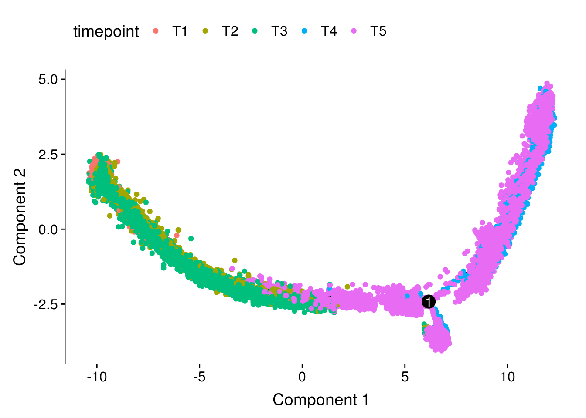
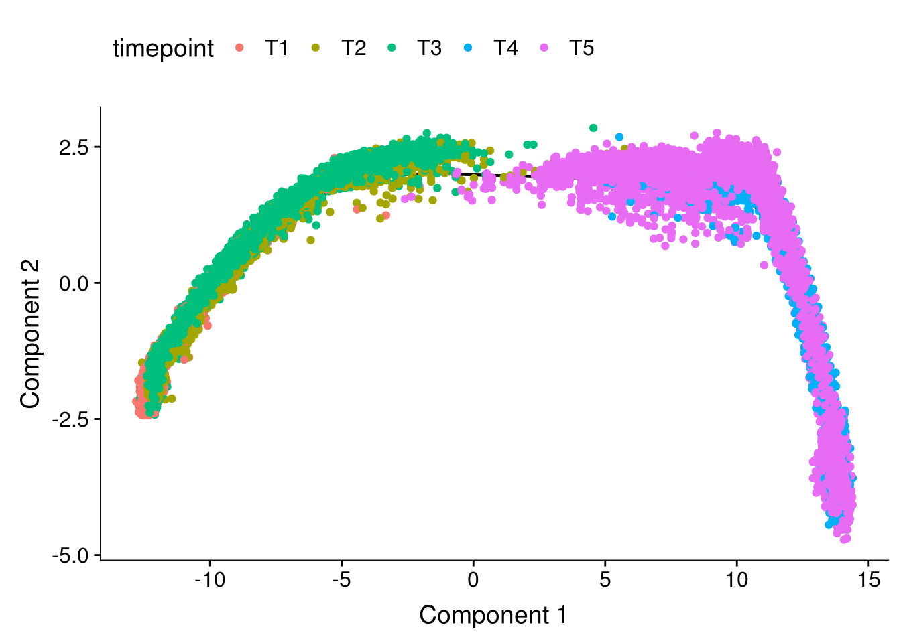
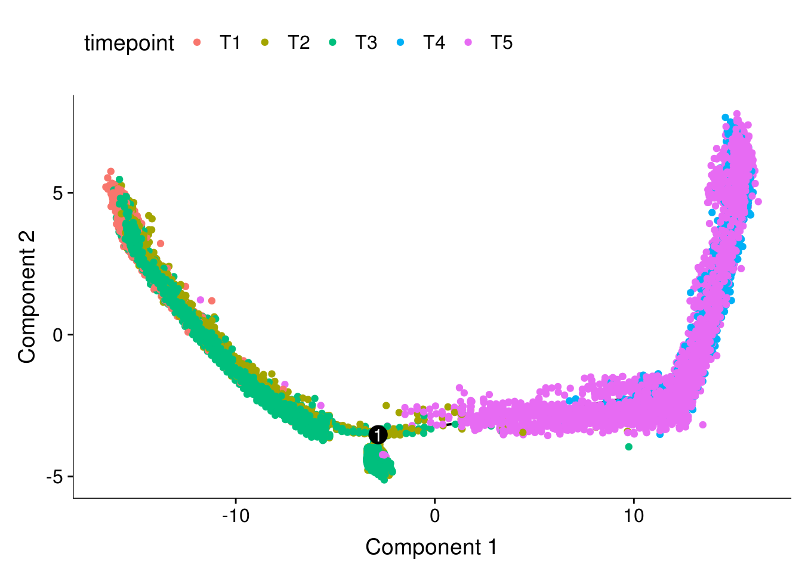
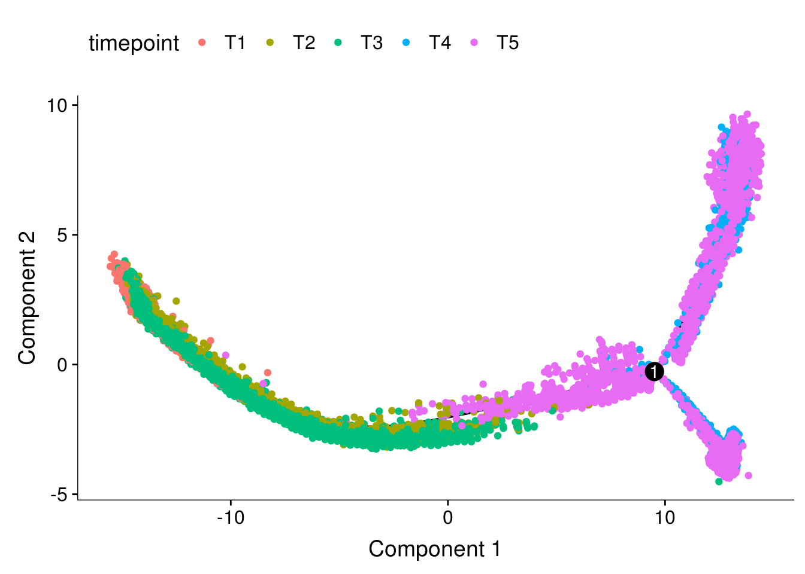
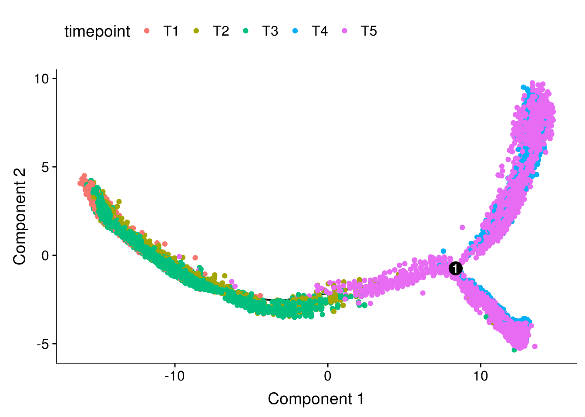
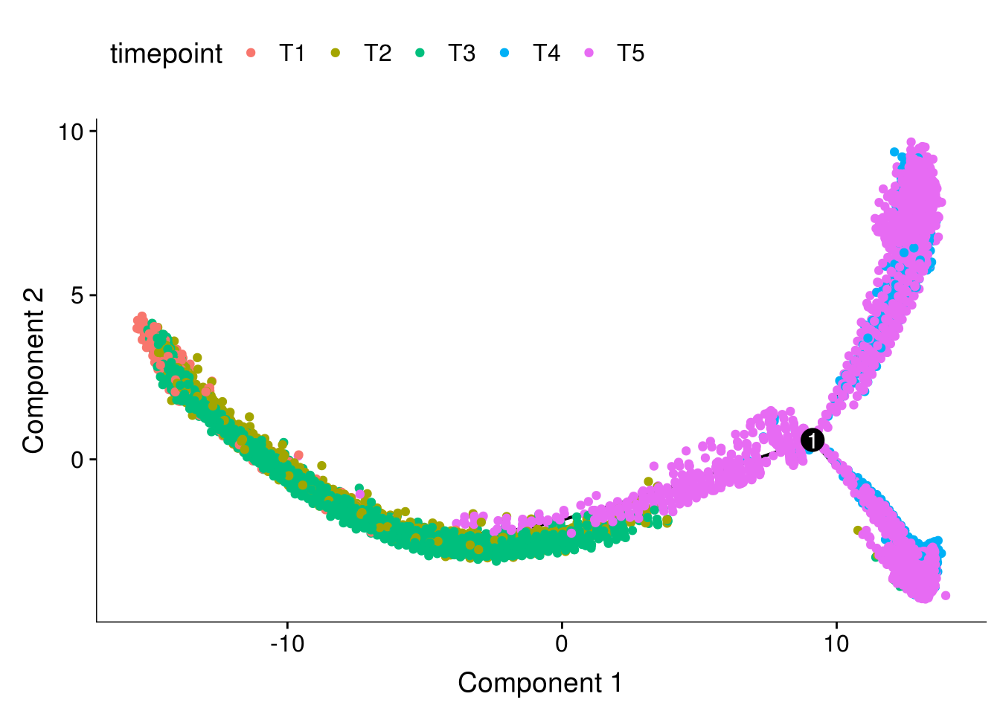
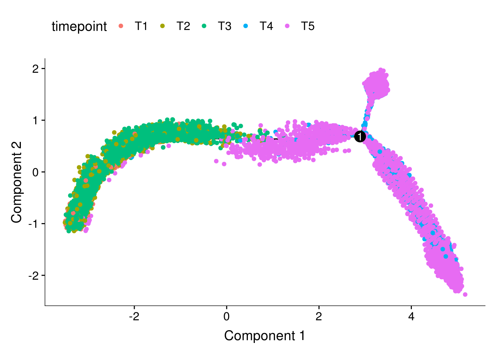
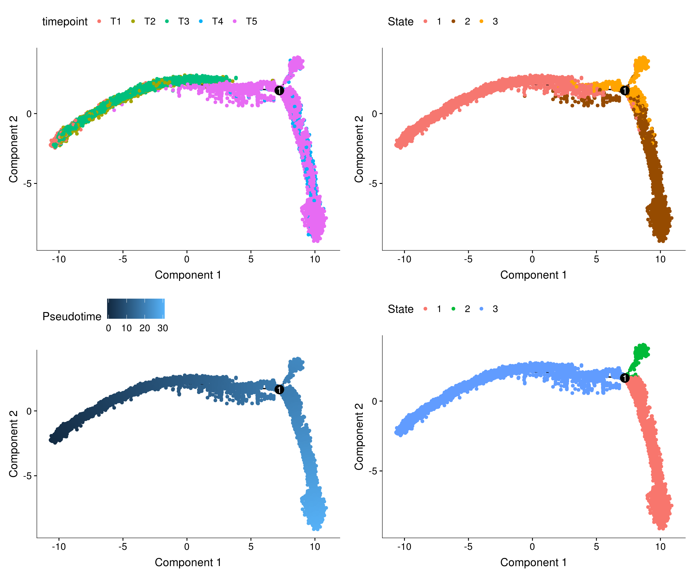

Last updated: 2019-05-13
Checks: 6 0
Knit directory: 10x-adipocyte-analysis/
This reproducible R Markdown analysis was created with workflowr (version 1.2.0). The Report tab describes the reproducibility checks that were applied when the results were created. The Past versions tab lists the development history.
Great! Since the R Markdown file has been committed to the Git repository, you know the exact version of the code that produced these results.
Great job! The global environment was empty. Objects defined in the global environment can affect the analysis in your R Markdown file in unknown ways. For reproduciblity it’s best to always run the code in an empty environment.
The command set.seed(20181026) was run prior to running the code in the R Markdown file. Setting a seed ensures that any results that rely on randomness, e.g. subsampling or permutations, are reproducible.
Great job! Recording the operating system, R version, and package versions is critical for reproducibility.
Nice! There were no cached chunks for this analysis, so you can be confident that you successfully produced the results during this run.
Great! You are using Git for version control. Tracking code development and connecting the code version to the results is critical for reproducibility. The version displayed above was the version of the Git repository at the time these results were generated.
Note that you need to be careful to ensure that all relevant files for the analysis have been committed to Git prior to generating the results (you can use wflow_publish or wflow_git_commit). workflowr only checks the R Markdown file, but you know if there are other scripts or data files that it depends on. Below is the status of the Git repository when the results were generated:
Ignored files:
Ignored: figures/
Ignored: output/bulk_analysis/
Ignored: output/demuxlet/
Ignored: output/markergenes/
Ignored: output/monocle/
Ignored: output/seurat_objects/
Ignored: output/velocyto/
Ignored: output/wgcna/
Ignored: tables/
Untracked files:
Untracked: .rstudio_old10/
Untracked: 10x-adipocyte-analysis-copy.Rproj
Untracked: analysis/.ipynb_checkpoints/velocyto_notebook_180831-checkpoint.ipynb
Untracked: analysis/10-180831-monocle-per-depot.Rmd
Untracked: analysis/10x-180831-BEAM-heatmap.Rmd
Untracked: code/BEAM-heatmaps.R
Untracked: code/BEAM_gsea.R
Untracked: code/colors.R
Unstaged changes:
Deleted: 10x-adipocyte-analysis.Rproj
Modified: analysis/10x-180504-DEGs-depots.Rmd
Modified: analysis/10x-180504-alignment.Rmd
Modified: analysis/10x-180504-depot-markers.Rmd
Modified: analysis/10x-180831-BATLAS.Rmd
Modified: analysis/10x-180831-TF_analysis.Rmd
Modified: analysis/10x-180831-beamGOplot.Rmd
Modified: analysis/10x-180831-colors.Rmd
Modified: analysis/10x-180831-demuxlet.Rmd
Modified: analysis/10x-180831-figures.Rmd
Modified: analysis/10x-180831-general-analysis.Rmd
Modified: analysis/10x-180831-monocle.Rmd
Modified: analysis/10x-180831-supplementary_figures.Rmd
Modified: analysis/index.Rmd
Modified: analysis/velocyto_notebook_180504.ipynb
Modified: analysis/velocyto_notebook_180831.ipynb
Deleted: code/REMOVE/find-brown-sample-markers-180504-REMOVE.R
Deleted: code/REMOVE/find-white-sample-markers-180504-REMOVE.R
Deleted: code/REMOVE/get-genes-monocle-180831-REMOVE.R
Modified: code/compute-genelists-monocle-depots.R
Modified: code/find-depot-markers-180504.R
Modified: code/find-markers.R
Modified: code/preprocess-data.R
Modified: code/run-monocle.R
Modified: code/velocyto_preprocess.py
Note that any generated files, e.g. HTML, png, CSS, etc., are not included in this status report because it is ok for generated content to have uncommitted changes.
These are the previous versions of the R Markdown and HTML files. If you’ve configured a remote Git repository (see ?wflow_git_remote), click on the hyperlinks in the table below to view them.
| File | Version | Author | Date | Message |
|---|---|---|---|---|
| Rmd | 79c83f6 | Pytrik Folkertsma | 2019-05-13 | Monocle feature selection |
| html | 4145fdd | Pytrik Folkertsma | 2019-05-13 | Build site. |
| Rmd | 4556d76 | Pytrik Folkertsma | 2019-05-13 | Monocle feature selection |
| html | 6030229 | Pytrik Folkertsma | 2019-04-03 | Build site. |
| Rmd | 5db5600 | Pytrik Folkertsma | 2019-04-03 | updated with new trajectory plot |
| html | 4d2bbec | Pytrik Folkertsma | 2019-03-29 | Build site. |
| Rmd | ad8fa06 | Pytrik Folkertsma | 2019-03-29 | monocle feature selection notebook |
This notebook shows the results of different feature selection methods of Monocle.
library(monocle)
library(cowplot)cds_high_disp <- readRDS('output/monocle/180831/monocle_high_dispersion/10x-180831-monocle')
plot_cell_trajectory(cds_high_disp, color_by = 'timepoint')
| Version | Author | Date |
|---|---|---|
| 4d2bbec | Pytrik Folkertsma | 2019-03-29 |
cds_timecombined <- readRDS('output/monocle/180831/monocle_time-combined/10x-180831-monocle')
plot_cell_trajectory(cds_timecombined, color_by='timepoint')
| Version | Author | Date |
|---|---|---|
| 4d2bbec | Pytrik Folkertsma | 2019-03-29 |
cds_res1.5 <- readRDS('output/monocle/180831/monocle_res1.5/10x-180831-monocle')
plot_cell_trajectory(cds_res1.5, color_by='timepoint')
| Version | Author | Date |
|---|---|---|
| 4d2bbec | Pytrik Folkertsma | 2019-03-29 |
cds_split_res0.5 <- readRDS('output/monocle/180831/monocle_T1T2T3_T4T5_res0.5/10x-180831-noreg-monocle')
plot_cell_trajectory(cds_split_res0.5, color_by='timepoint')
| Version | Author | Date |
|---|---|---|
| 4d2bbec | Pytrik Folkertsma | 2019-03-29 |
cds <- readRDS('output/monocle/180831/monocle_T1T2T3_T4T5_res1.5/10x-180831-monocle')
plot_cell_trajectory(cds, color_by='timepoint')
| Version | Author | Date |
|---|---|---|
| 4d2bbec | Pytrik Folkertsma | 2019-03-29 |
With doublets removed (used for all further analyses).
cds <- readRDS('output/monocle/180831/10x-180831-monocle-monocle_genelist_T1T2T3_T4T5_res.1.5')
plot_cell_trajectory(cds, color_by='timepoint')
cds_type <- readRDS('output/monocle/180831/monocle_type/10x-180831-monocle')
plot_cell_trajectory(cds_type, color_by='timepoint')
| Version | Author | Date |
|---|---|---|
| 6030229 | Pytrik Folkertsma | 2019-04-03 |
cds_pc2 <- readRDS('output/monocle/180831/monocle_PC2/10x-180831-monocle')
plot_grid(
plot_cell_trajectory(cds_pc2, color_by='timepoint'),
plot_cell_trajectory(cds_pc2, color_by='State.old') + scale_color_manual(values=c("#f67770", "#964B00", "orange"), name = "State"),
plot_cell_trajectory(cds_pc2, color_by='Pseudotime'),
plot_cell_trajectory(cds_pc2, color_by='State'),
ncol=2
)
| Version | Author | Date |
|---|---|---|
| 4d2bbec | Pytrik Folkertsma | 2019-03-29 |
sessionInfo()R version 3.5.3 (2019-03-11)
Platform: x86_64-pc-linux-gnu (64-bit)
Running under: Storage
Matrix products: default
BLAS/LAPACK: /usr/lib64/libopenblas-r0.3.3.so
locale:
[1] LC_CTYPE=en_US.UTF-8 LC_NUMERIC=C
[3] LC_TIME=en_US.UTF-8 LC_COLLATE=en_US.UTF-8
[5] LC_MONETARY=en_US.UTF-8 LC_MESSAGES=en_US.UTF-8
[7] LC_PAPER=en_US.UTF-8 LC_NAME=C
[9] LC_ADDRESS=C LC_TELEPHONE=C
[11] LC_MEASUREMENT=en_US.UTF-8 LC_IDENTIFICATION=C
attached base packages:
[1] splines stats4 parallel stats graphics grDevices utils
[8] datasets methods base
other attached packages:
[1] cowplot_0.9.4 monocle_2.8.0 DDRTree_0.1.5
[4] irlba_2.3.3 VGAM_1.1-1 ggplot2_3.1.0
[7] Biobase_2.42.0 BiocGenerics_0.28.0 Matrix_1.2-17
loaded via a namespace (and not attached):
[1] ggrepel_0.8.0 Rcpp_1.0.1 lattice_0.20-38
[4] FNN_1.1.3 assertthat_0.2.1 rprojroot_1.3-2
[7] digest_0.6.18 slam_0.1-45 R6_2.4.0
[10] plyr_1.8.4 backports_1.1.3 qlcMatrix_0.9.7
[13] sparsesvd_0.1-4 evaluate_0.13 pillar_1.3.1
[16] rlang_0.3.2 lazyeval_0.2.2 whisker_0.3-2
[19] combinat_0.0-8 rmarkdown_1.12 labeling_0.3
[22] Rtsne_0.15 stringr_1.4.0 igraph_1.2.4
[25] pheatmap_1.0.12 munsell_0.5.0 compiler_3.5.3
[28] xfun_0.5 pkgconfig_2.0.2 htmltools_0.3.6
[31] tidyselect_0.2.5 tibble_2.1.1 gridExtra_2.3
[34] RANN_2.6.1 workflowr_1.2.0 matrixStats_0.54.0
[37] viridisLite_0.3.0 crayon_1.3.4 dplyr_0.8.0.1
[40] withr_2.1.2 grid_3.5.3 densityClust_0.3
[43] gtable_0.3.0 git2r_0.25.2 magrittr_1.5
[46] scales_1.0.0 docopt_0.6.1 stringi_1.4.3
[49] reshape2_1.4.3 viridis_0.5.1 fs_1.2.7
[52] limma_3.36.5 fastICA_1.2-1 RColorBrewer_1.1-2
[55] tools_3.5.3 glue_1.3.1 purrr_0.3.2
[58] HSMMSingleCell_0.114.0 yaml_2.2.0 colorspace_1.4-1
[61] cluster_2.0.7-1 knitr_1.22